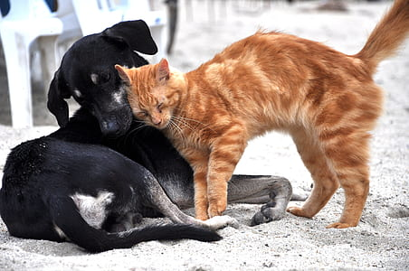

Donate
We raise funds to support our programs through adoption fees, donations, and fundraising activities. We receive no government assistance or support from any national organization. We need money and donated supplies to fulfill our mission to rescue abused, neglected, and abandoned cats and dogs, rehabilitate them, and find them loving homes. We depend on the generosity of people like you to help us care for the cats and dogs we rescue.
Mail a check to: SPCA of Northern Virginia P.O. Box 100220 Arlington, VA 22210-3220
